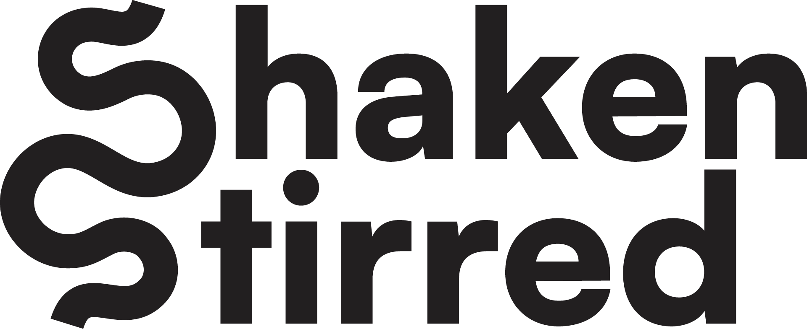
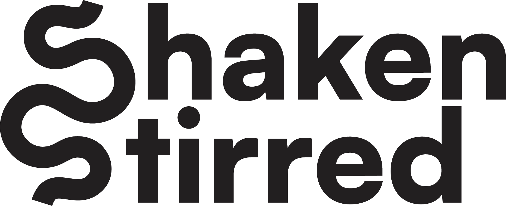

The logomark, wordmark and brand elements that form the brand.
Creating posters and social media that put the colourful drinks at the centre of the design.


After numerous rounds of feedback, we were happy with the above logo. However, it was tricky to get the right balance of sophisticated and playful.
 

The submitted PDF that was sent to the client.
This is the presentation and styleguide that that was sent to the client when the project wrapped up. It showcased the logo, colour scheme and fonts, as well as how to use them and the example posters and social media posts for the client to understand the feel and style of the brand.